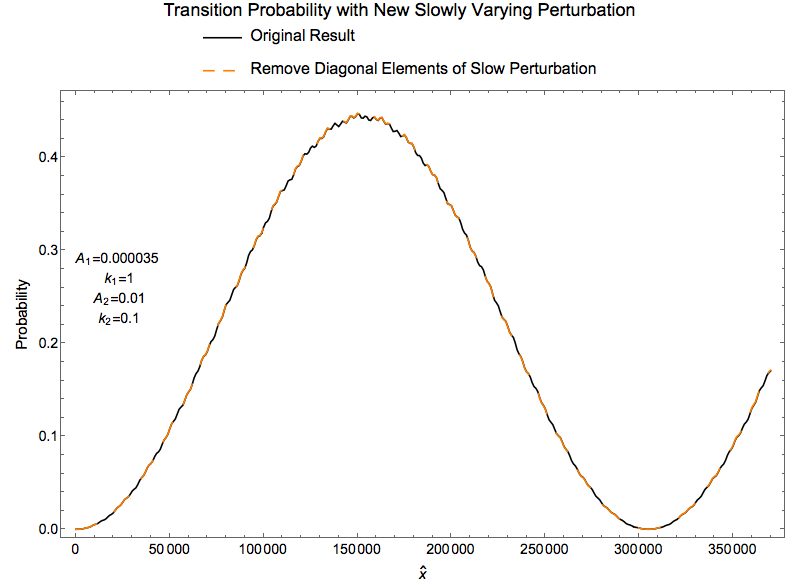

Physics Picture¶
Rabi oscillations¶
Hamiltonian of Rabi oscillation is
\[\begin{split}H = -\frac{\omega_0}{2} \begin{pmatrix} 1 & 0 \\ 0 & -1 \end{pmatrix} - A \cos(\omega t)\begin{pmatrix} 0 & 1 \\ 1 & 0 \end{pmatrix} .\end{split}\]
Test Example¶
First we choose a system that is on resonance
\[H_1 = -\frac{\omega_m}{2} \sigma_3 + \frac{\delta \lambda_1}{2} \cos 2\theta_m \sigma_3 - \frac{\delta \lambda_1}{2} \sin 2\theta_m \sigma_1,\]
where \(\delta\lambda_1 = A_1 \sin (k_1 x)\), where \(k_1 = \omega_m\) and \(A_1 = 3.5\times 10^{-5}\omega_m\). This sets the system to resonance.

Fig. 28 Resonance
Does the Diagonal Term Matter?
Removing the diagonal elements of the perturbation
\[H_1' = -\frac{\omega_m}{2} \sigma_3 - \frac{\delta \lambda_1}{2} \sin 2\theta_m \sigma_1,\]
will result in Fig. 29.

Fig. 29 Remove the diagonal elements of the preturbation
Adding in Slow Rotating Field
Add a new slow perturbation
\[\delta \lambda_2 = A_2 \sin (k_2 x),\]
with
\[\begin{split}A_2 &= 10^{-2},\\
k_2 &= 0.1.\end{split}\]

Fig. 30 Added new slow perturbation
Removing Diagonal Elements of Slow Perturbation
Removing the diagonal elements of slow perturbation
\[H_2' = -\frac{\omega_m}{2} \sigma_3 + \frac{\delta \lambda_1 }{2} \cos 2\theta_m \sigma_3 - \frac{\delta \lambda_1 + \delta \lambda_2}{2} \sin 2\theta_m \sigma_1,\]
gives us the result Fig. 31.

Refs & Notes¶
- Note to self: My advisor proposed and did the first calculations.